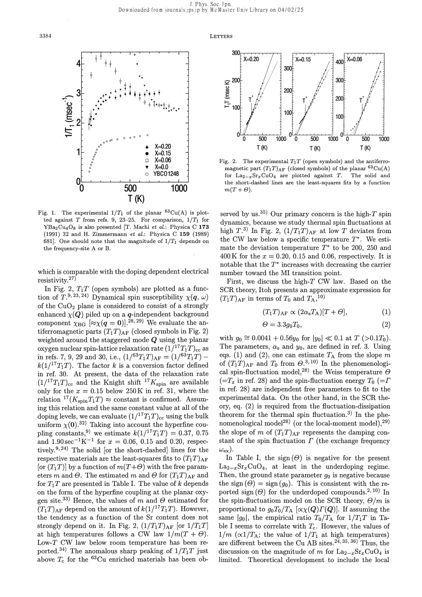
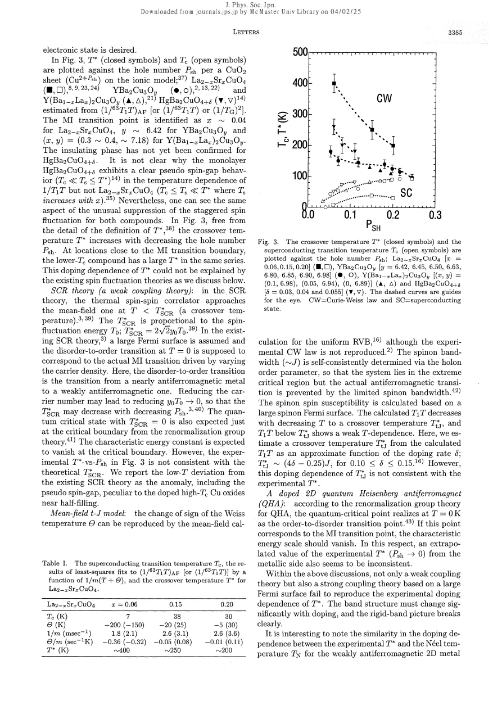

experiment · Itoh · supplied source 1997
Unconventional Suppression of Antiferromagnetic Spin Fluctuation in the High-Tc Cu Oxide La2-xSrxCuO4
The low-frequency suppression scale grows toward lower doping, contrary to the vanishing scale expected in the particular critical models compared.
The question: Can existing spin-fluctuation theories explain the doping trend of the LSCO crossover?
Before you start: the few terms you need
- LSCO: layered La2-xSrxCuO4; nominal x is Sr per formula unit
- Local probe: a distribution can matter even when the bulk average barely changes
See → explain → test
Understand it in four pictures.
Picture 1 / 4
Separate background from AF response
Look for: Cu relaxation includes uniform and staggered contributions.
Swipe across the picture to read every label, or enlarge it below.
- Cu rate
- Estimated uniform part
- AF-weighted remainder
Teaching schematic. The subtraction uses oxygen/bulk susceptibility assumptions and is not directly measured at every composition.
Removing a uniform background changes fitted Weiss parameters.
Picture 2 / 4
Define the departure
Look for: Extrapolate high-temperature T1T and locate the lower-temperature deviation.
Swipe across the picture to read every label, or enlarge it below.
- High-T Curie-Weiss fit
- Low-T suppression
- T* estimate
Teaching schematic. The source quotes about 400,250,200 K for x= .06,.15,.20 after AF analysis.
T* is a crossover, not a claimed thermodynamic transition.
Picture 3 / 4
Compare opposite trends
Look for: Experiment has a larger T* closer to the metal-insulator boundary.
Swipe across the picture to read every label, or enlarge it below.
- Measured trend
- Compared model trend
Teaching schematic. This tests specific historical models and assumptions; no precise phase boundaries are drawn.
Some compared critical models instead require their characteristic scale to vanish at that boundary.
Check the original: PDF p. 3
Picture 4 / 4
Retain the inference limits
Look for: The source calls the departure anomalous near half filling.
Swipe across the picture to read every label, or enlarge it below.
- Opposite doping trend
- Simple model mismatch
- Electronic structure needs refinement
Teaching schematic. The models assume large Fermi surfaces and specified identifications of the transition.
A mismatch excludes a simple explanation under its assumptions, not all quantum-critical descriptions.
Predict before revealing
Does departure from a Curie-Weiss extrapolation at T* prove a thermodynamic phase transition?
Choose an answer, then compare the reasoning.
The paper calls T* a crossover and contrasts its doping trend with specific model scales; thermodynamic singularities are not measured here.
Read the answer
No; this source explicitly defines a crossover The paper calls T* a crossover and contrasts its doping trend with specific model scales; thermodynamic singularities are not measured here.
Go deeper Follow the full argument
The comparison being made
This short 1997 paper analyzes new planar Cu relaxation for LSCO x = 0.06, 0.15 and 0.20, alongside previous results for other cuprates. It focuses on the crossover from a high-temperature Curie-Weiss-like response to a suppressed low-frequency response on cooling. The central question is the doping dependence of that crossover near the metal-insulator boundary. The authors distinguish a general suppression relative to a thermal antiferromagnetic baseline from the more pronounced maximum-and-downturn traditionally called a pseudospin gap in bilayers. A single layer can share the baseline departure even if it lacks the same conspicuous maximum. Different operational temperatures should therefore not be conflated.
How the antiferromagnetic contribution is estimated
Cu relaxation samples the momentum-weighted low-frequency susceptibility. The authors view it as a strongly enhanced part near the antiferromagnetic wave vector plus a nearly momentum-independent background. They subtract an estimated uniform contribution using planar oxygen relaxation and bulk susceptibility assumptions. Direct oxygen information is incomplete across the doping and temperature range, so an approximate scaling relation is extended to other samples. This subtraction changes the fitted slope and Weiss offset. The paper acknowledges that its numerical values depend on the assumed contribution, while the overall doping tendency is more stable. Thus the antiferromagnetic-only curve is an analysis result, not a separate detector channel directly measured everywhere.
Why high-temperature fits are useful but limited
The high-temperature AF-weighted T1T is approximated by a linear m(T + Θ). Within self-consistent renormalization theory its slope involves the momentum width scale TA, while Θ is linked to a ground-state parameter and the fluctuation energy T0. In a phenomenological model Θ and the damping scale can instead be independent fitting parameters. This distinction matters: a fit with two adjustable numbers does not prove all microscopic relations assumed by a more constrained theory. The magnitude also depends on which Cu A or B environment is selected, so local inhomogeneity limits a precise interpretation of absolute amplitudes. The source asks for theory incorporating those local differences.
The key opposite doping trends
The estimated AF crossover temperatures are approximately 400 K for x = 0.06, 250 K for x = 0.15 and 200 K for x = 0.20. They increase as the system approaches the low-hole-density insulating boundary. The specific weak-coupling SCR scenario compared identifies the actual metal-insulator transition with a magnetic disorder-to-order boundary and expects a characteristic scale to fall toward zero there. The source finds the observed trend incompatible with that identification. It also examines a mean-field t-J model and a doped quantum Heisenberg comparison under particular assumptions, arguing that their predicted doping trends do not reproduce the observation. These are historical tests of constrained models, not a general rejection of correlations.
The proposed lesson and unresolved mechanism
The authors suggest that the simple rigid-band or large-Fermi-surface description must change substantially with doping. Similarities to a singlet-RVB scale and to partial loss of Fermi surface under a spin-density-wave gap are described as suggestive, not conclusive. The paper explicitly calls T* a crossover rather than a phase transition. It also notes distinctions between single- and bilayer expressions, without making bilayer coupling a prerequisite for the general suppression. For learning, retain three levels: the measured temperature-dependent rate; the estimated AF part based on background subtraction; and the inference that the compared theories fail under their particular identification of the critical boundary.
How to compare the evidence
To follow the theoretical comparison, distinguish the measured total Cu rate from the estimated antiferromagnetic contribution. The subtraction uses oxygen data where available and susceptibility-based estimates elsewhere; the uniform contribution is not measured by the identical procedure at every composition. Next distinguish two statements about doping. The inferred crossover temperature increases toward the lightly doped insulating side, while the tested weak-coupling description expects a low-energy scale tied to its own large-Fermi-surface instability. Disagreement rejects that particular explanation under the subtraction assumptions. It does not show that every conceivable critical theory is impossible, nor that T* is a sharply broken symmetry. The paper is strongest when read as a constrained test of an operational crossover and a specified model.
Translate the mathematics Key equations and symbol meanings
(1/T1T)AF = (1/T1T)Cu - k(1/T1T)O
Symbols: k: conversion factor from oxygen to uniform Cu contribution; AF: remainder weighted near the antiferromagnetic mode.
A model-supported subtraction requiring assumptions about uniform response and couplings.
(T1T)AF = m(T + Θ)
Symbols: m: fitted slope; Θ: Weiss offset.
The deviation below this high-temperature linear baseline defines the estimated crossover.
Read the evidence A guided look at the original figures

Open the full original page ↗

Open the full original page ↗
What this paper does—and does not—establish
- Full four-page scanned body read visually.
- Background subtraction and model identifications are assumptions.
- No universal dismissal of quantum criticality or thermodynamic pseudogap boundary is inferred.
Explain it back.
Try answering aloud before opening the explanation.
Is the AF contribution directly observed separately?
It is estimated after subtracting a background using additional assumptions.
What is the principal model challenge?
The observed suppression scale rises toward low doping instead of vanishing as in the compared critical identification.
Why does A/B selection matter?
Different local Cu environments have different rates, limiting absolute-amplitude inference.
Connect the next paper.
Source version, reading coverage and preservation
Complete scanned source read visually at full page size, including main equations and figures
Reviewed body pages: 1, 2, 3, 4. References checked as a bibliography but cited works were not independently re-read.
Original file retained byte for byte. SHA-256: 0cd30522db5f4bedd437d978c00b8d33494654d6613f22d24ae1b417debf0780
Filename: JPSJ - Itoh - Suppression of AF spin fluctuations in LSCO - 1997.pdf.